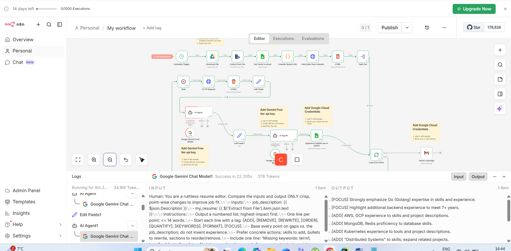

The Ultimate Job Search Workflow with n8n
A repeatable system to collect fresh jobs, score your resume fit, generate tailored cover letters, and track everything—automatically.
For a long time I tried the “apply more” strategy. It felt productive—until it didn’t. Hundreds of applications turned into almost no replies. The problem wasn’t effort, it was the process.
The job market rewards speed, relevance, and consistency. A manual workflow makes all three hard.
This is the workflow I built with n8n + AI. It runs daily, finds relevant roles, scores my fit, generates a cover letter draft, and logs everything so I can focus on the best opportunities.
What the workflow does
- Collects new job listings based on your filters
- Extracts job descriptions
- Scores resume match and highlights missing keywords
- Generates a tailored cover letter (short, specific)
- Saves results to Google Sheets and sends a daily summary
Workflow diagram

n8n.png in this repo).12-step workflow breakdown
- Schedule: Trigger the workflow daily (e.g., 5 AM) to apply early.
- Fetch resume: Pull the latest resume from Google Drive.
- Extract text: Convert your resume PDF into text for AI comparison.
- Set filters: Keywords, location, level, and exclusions.
- Build search URL: Create job-board queries from the filters.
- Collect listings: Gather job links/titles quickly.
- Clean & dedupe: Normalize URLs, remove duplicates.
- Fetch descriptions: Pull full job descriptions and requirements.
- Score match: Compare resume vs JD; output a 0–100 score + notes.
- Cover letter: Draft 150–220 words based on JD + your resume.
- Resume tips: Suggest
[ADD],[REMOVE],[REWRITE]edits. - Log & notify: Save to Sheets and email summary.
How I use the output
Each morning I sort the sheet by score, start with the highest-fit roles posted most recently, and apply fast. The point is not to apply to everything—it's to apply to the right things consistently.
What’s next
If you want, I can publish the exact node-by-node n8n build and the prompts used for scoring and cover letters.